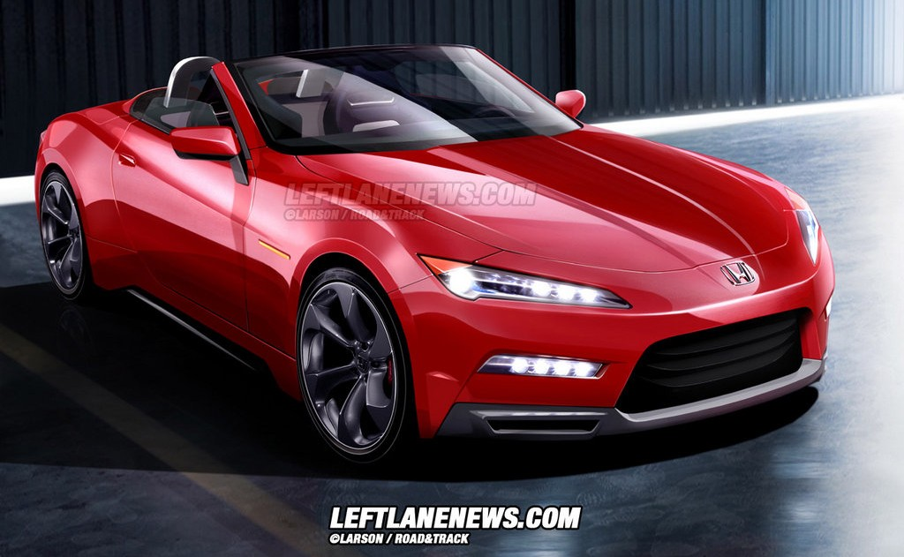

|
|

Ferrari es una compañía de automóviles deportivos con sede en Maranello (Italia).
Fue fundada en 1929 por un piloto de autos de competición, Enzo Ferrari, con el nombre de Scuderia Ferrari,
construyendo automóviles de competición y, más tarde, en 1947, fabricando autos deportivos.
Originalmente, la Scuderia Ferrari patrocinaba a pilotos y automóviles de Alfa Romeo y Fiat. La compañía comenzó a
producir automóviles en serie en el año 1947. Se convirtió en Ferrari S.A. cuando en el año 1969 Fiat Group entró a
ser parte del Consejo de Administración y se hizo accionista de la empresa. Actualmente el principal accionista es Fiat
Group, con el 90%, un 5% de las acciones ha sido comprado, en 2005, por una compañía de los EAU, y el resto pertenece a Piero Ferrari, hijo de Enzo.
Enzo Ferrari fundó la Scuderia Ferrari en 1929 con el objetivo de patrocinar a pilotos aficionados de Módena. Ferrari entrenó a varios pilotos y compitió con éxito con autos Alfa Romeo hasta 1938, cuando fue oficialmente contratado por Alfa Romeo como jefe de su departamento de carreras. Quisque sollicitudin sapien ut nibh commodo rhoncus. Mauris viverra nunc justo, vitae gravida nibh porttitor ac. Nam erat felis, pulvinar at lacus vitae, sollicitudin venenatis nisl. Nunc tincidunt gravida vestibulum. Sed turpis eros, mollis id dui in, pharetra viverra dui.
El primer automóvil deportivo de Ferrari, el 125 S de 1947, estaba propulsado por un motor V12 de 1,5 litros. Aunque era reacio a ello, Enzo construía y vendía sus automóviles para financiar la Scuderia. Mientras sus autos se ganaban rápidamente una reputación gracias a su calidad, Enzo mantuvo una famosa aversión a sus clientes, pues sentía que la mayoría de ellos estaban comprando sus autos por el prestigio y no por sus prestaciones.
|
|
Esta mítica colina, situada en el condado de West Sussex, (Reino Unido) es el lugar donde se dan cita autos de rally, prototipos, F1, superdeportivos, entre otros.
Land Rover lleva a este festival la Range Rover Sport SVR, una SUV de altas prestaciones creada por la división de Operaciones de Vehículos Especiales de Jaguar Land Rover
El vehículo, que sigue en fase de desarrollo y que se mostró con la carrocería camuflada, equipa un V8 a gasolina de 5.0 litros con una potencia de 550 caballos de fuerza.
1ª Generación: nace en 1999, en pocas palabras fue un “rebadge” de la GMC Yukon Denali que ya ofrecía lujo y poder, pero no el pedigrí Cadillac en su nombre.
|